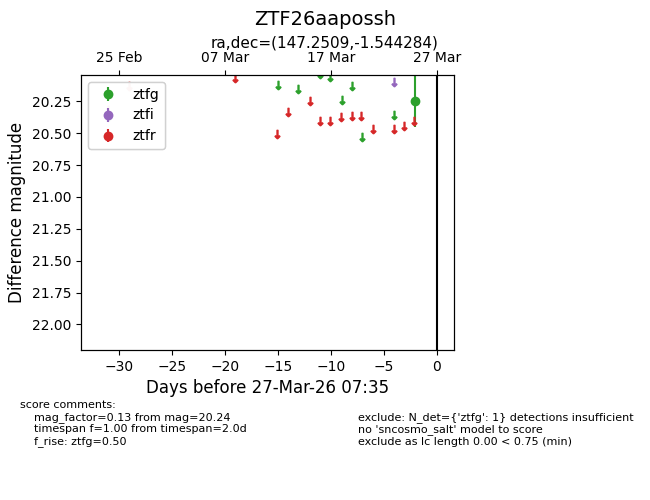
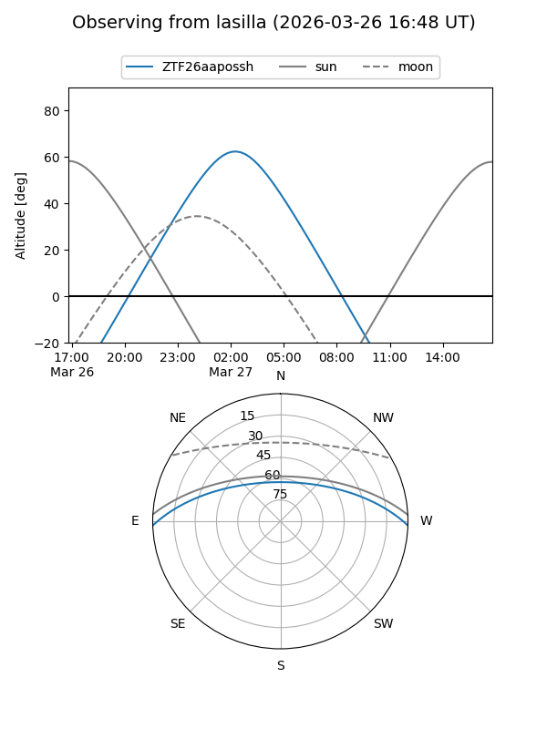
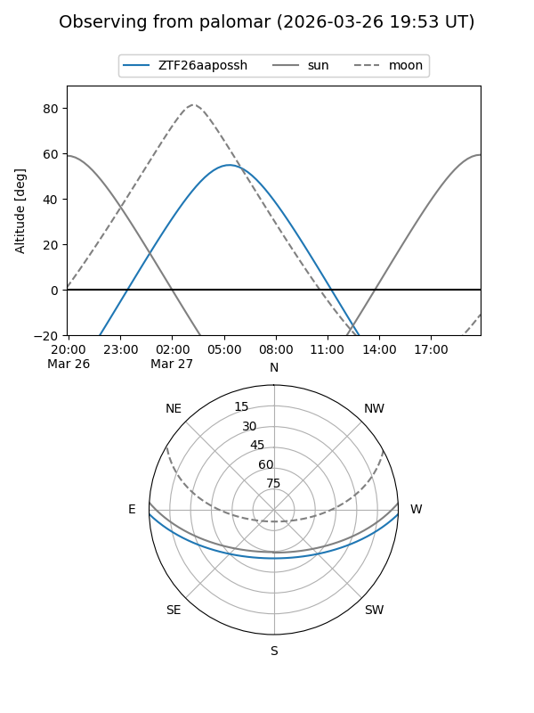

ZTF26aapossh
Target ZTF26aapossh at 2026-03-27 07:37
Aliases and brokers:
FINK: link
Lasair: link
ALeRCE: link
alt names
ZTF26aapossh (ztf,fink_ztf)
Coordinates:
equatorial (ra, dec) = 147.2509,-1.54428
equatorial (HMS+DMS) = 09:49:00.22,-01:32:39.42
galactic (l, b) = (238.5718,+37.59546)
Flags:
Photometry:
last ztfg=20.24
1 ztfg detections
Lightcurve

Visibility


Additional plots